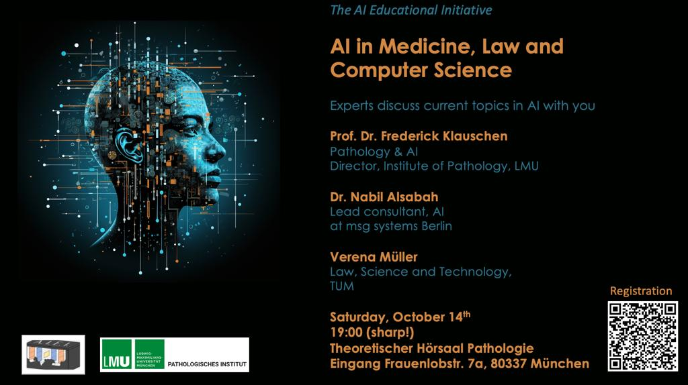

AI in Medicine, Law and Computer Science

On 8th of July, we had the pleasure to host a meetup on Artificial Intelligence! Aimed at a general audience, we gathered AI scientists and users to share insights on their research, future plans, and concerns related to AI developments.
Event Details:
Date: October 14th , Saturday
Time: 19:00 (sharp!)-21:00
Location: Frauenlobstr. 7a, 80337 München (Pathology Institute LMU)
Expert Talks
Gain insights from our lineup of esteemed speakers who are experts in their respective fields of Medicine, Law, and Computer Science. They will be sharing their experiences, challenges, and the transformative potential of AI in their domains.
Interactive Panel Discussion
Our experts will come together for a panel discussion following the talks, providing different perspectives of the AI landscape. This is a great opportunity to engage in dialogue, ask questions, and discuss the current issues, opportunities, and future directions of AI, as well as AI regulation and ethics.
Speakers
Prof. Dr. med. Frederick Klauschen
Digital pathology & AILMU Pathology Institute, Director
Dr. Nabil Alsabah
Lead consultant, AI msg systems Berlin
Verena Müller
Law, Science and Technology,LMU
Whether you’re a professional, student, tech enthusiast, or just curious about the world of AI, this meetup promises to be an enriching experience.
Space is limited so please register here to secure your spot for free 😊
Looking forward to seeing you there!